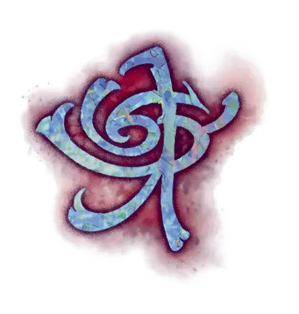

Метка охранения
Mark of Warding
Черта Драконьей метки (Требования: кампания в Эберроне, не можете иметь другую черту Драконьей метки)

Вы получаете следующие преимущества:
Интуиция стража. Когда вы совершаете проверку Интеллекта (Расследование) или проверку характеристики с Воровскими инструментами, вы можете бросить 1к4 и добавить выпавшее число к результату проверки.
Заклинания метки. У вас всегда подготовлены заклинания Сигнал тревоги и Доспехи мага. Вы можете сотворить каждое из них один раз без траты ячейки заклинаний, и вы восстанавливаете возможность сотворить это заклинание таким образом по завершению Долгого отдыха. Кроме того, вы можете сотворять их, используя имеющиеся у вас ячейки заклинаний подходящих уровней. Ваша заклинательная характеристика для этих заклинаний — Интеллект, Мудрость или Харизма (вы выбираете, когда получаете эту черту).
Когда вы достигаете 3-го уровня персонажа, у вас также всегда подготовлено заклинание Волшебный замок, и вы можете сотворить его тем же способом.
Заклинания метки. Если у вас есть классовое умение Сотворение заклинаний или Магия договора, то заклинания из следующей таблицы добавляются в список заклинаний этого умения.
Заклинания Метки охранения
| Уровень заклинания | Заклинания |
| 1 | Доспех Агатиса, Убежище |
| 2 | Волшебная аура Нистула, Стук |
| 3 | Магический круг, Охранная руна |
| 4 | Верный пёс Морденкайнена, Потайной сундук Леомунда |
| 5 | Преграда жизни |